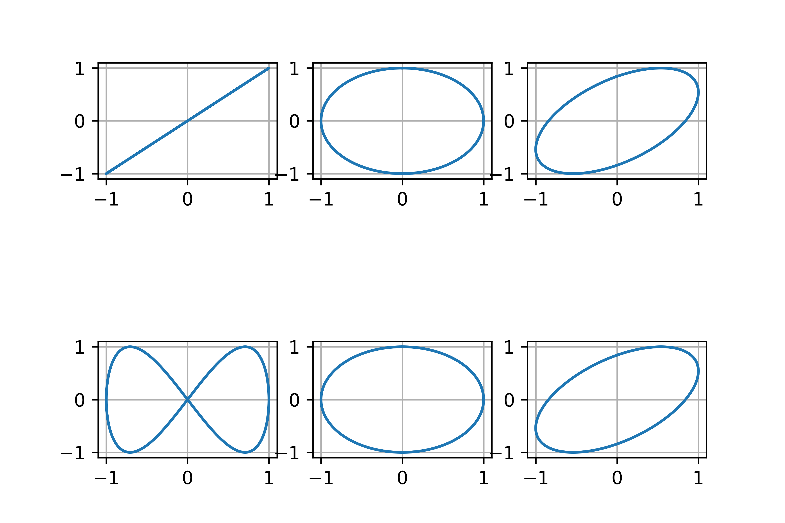
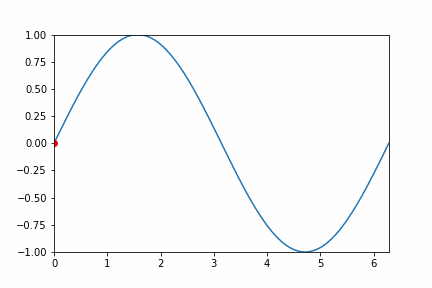
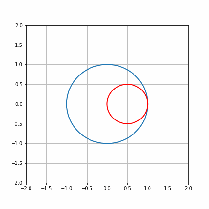
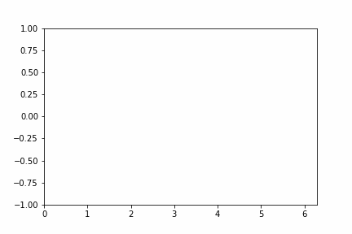
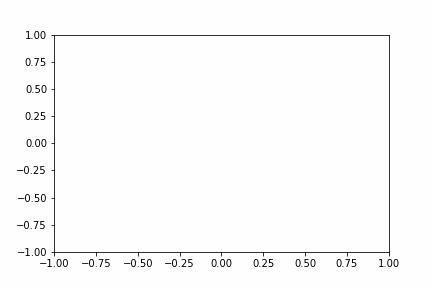
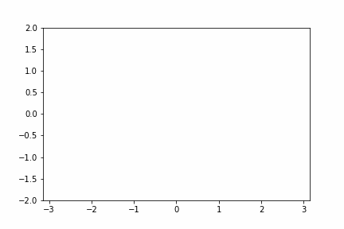

matplotlib库提供许多函数画静态图以及动态图。
下面展示效果图和源码：
demo1:

1 | import matplotlib.pyplot as plt |
demo2:

1 | import numpy as np |
demo3:

1 | import numpy as np |
demo4:

1 | from math import sin, cos |
demo5:

1 | import numpy as np |
demo6:



1
2
3
4
5
6
7
8
9
10
11
12
13
14
15
16
17
18
19
20
21
22
23
24
25
26
27
28
29
30
31
32
33
34
35
36
37
38import numpy as np
import matplotlib.pyplot as plt
from matplotlib.animation import FuncAnimation
#author： zzm
#time： 2019.4.25
#制作李萨如图形动态gif
#李萨如图形的轨迹方程：
# x = A1cos(wt+β1)
# y = A2cos(wt+β2)
figure, ax = plt.subplots()
xdata, ydata = [], []
dot, = ax.plot([], [], 'r-', animated=False)
#def x(s):
# return np.cos(3*s+np.pi)
def y(s):
return 4/np.pi/3*np.sin(3*s)+4/np.pi/3*np.sin(3*s)
def init():
ax.set_xlim(-np.pi, np.pi)
ax.set_ylim(-2, 2)
return dot,
def update(frame):
xdata.append(frame)
ydata.append(y(frame))
dot.set_data(xdata, ydata)
return dot,
photo = FuncAnimation(figure, update, frames=np.linspace(-np.pi,np.pi, 128),
init_func=init, blit=True)
photo.save('zz2.gif', writer='pillow', fps=30)
plt.show()